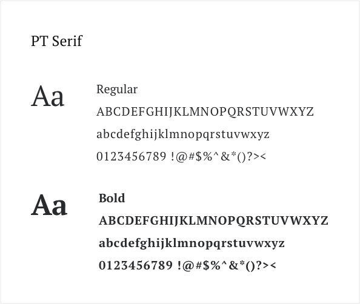
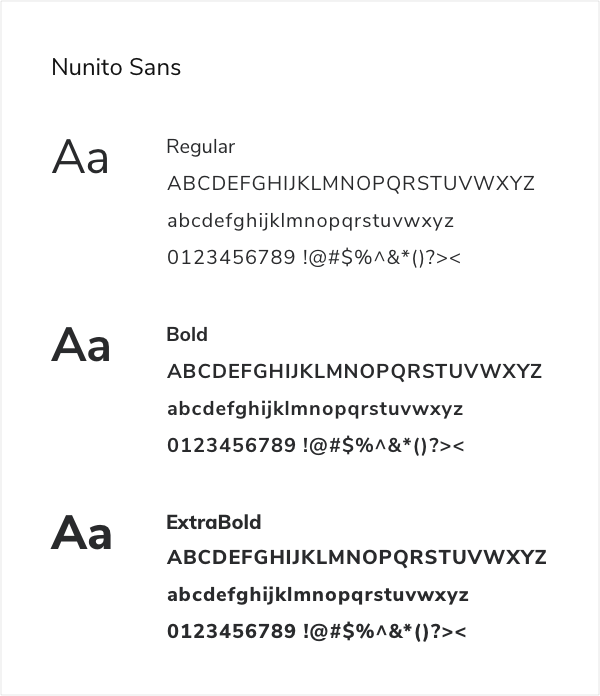

Additional Projects


The Greenspire design concept has its start within a front end development coding challenge I gave to myself. The challenge was to improve my front-end development skills with developing a website based on Bootstrap front end frameworks. A “green” inspired brand identity was quickly imagined for the organization.
view live websiteThe initial low fidelity wireframes of the Greenspire were developed within Balsamiq to rapidly block out some of the basic website functionalities. This step enabled me to align my Bootstrap code learning with my unpolished design plans for the website.
Within the design, I planned a few collapsible accordions due to how immensely useful they are with creating a more compact responsive design. Collapsible accordions can highlight important details of content and reveal more upon a tap or click. As a result, the design stays centered on the essential information first while the remainder is available only if needed.
view wireframeThe low fidelity wireframes continued into a few mobile views to help apply responsive design thinking across the project. Planning responsive layouts during the initial design stages will make for an easier front end development process later.
view mobile wireframeCaring, Inclusive, Eco-Friendly and Authentic
PT Serif is a transitional serif typeface with humanistic terminals. It is designed for use together with PT Sans, and is harmonized across metrics, proportions, weights and design. The family consists of six styles: regular and bold weights with corresponding italics form a standard font family for basic text setting; two caption styles in regular and italic are for use in small point sizes.
Nunito is a well balanced sans serif typeface superfamily, with 2 versions: The project began with Nunito, created by Vernon Adams as a rounded terminal sans serif for display typography. Jacques Le Bailly extended it to a full set of weights, and an accompanying regular non-rounded terminal version, Nunito Sans.
Greenspire was intended to have an “organic” type of feeling to the brand. I wanted subtle earthy colors for the palette that felt eco-friendly and authentic. Shades of natural greens were selected along with grays that contrasted nicely to their selected backgrounds.
On the typography side, I choose to go with a pairing of serif and sans typefaces. PT Serif was selected as a classic serif that can be beautifully applied as a heading to go with Nunito Sans as a clean, easy-to-read body font.
Everything was then brought together within Sketch to create a high fidelity design for the landing page.
view desktop designThe Greenspire concept from a coding perspective was a success for myself but when it comes to the design I am unfulfilled. The concept came really out of a need to practice front end coding which I feel may have narrowed my vision when it came to developing a complete brand identity.
Overall I believe it to be too simple in all its forms which leads to its visual assets becoming plain and uninspiring. It sounds a bit harsh for something of my creation but there is value within critical assessment. It’s about discovering all the possibilities so I may not default to a singular way of thinking, as I am intent on improvement.
I’d love to go back and do a complete exploration to see where else I could bring the concept, what unique voice could I give it and who it is speaking to.